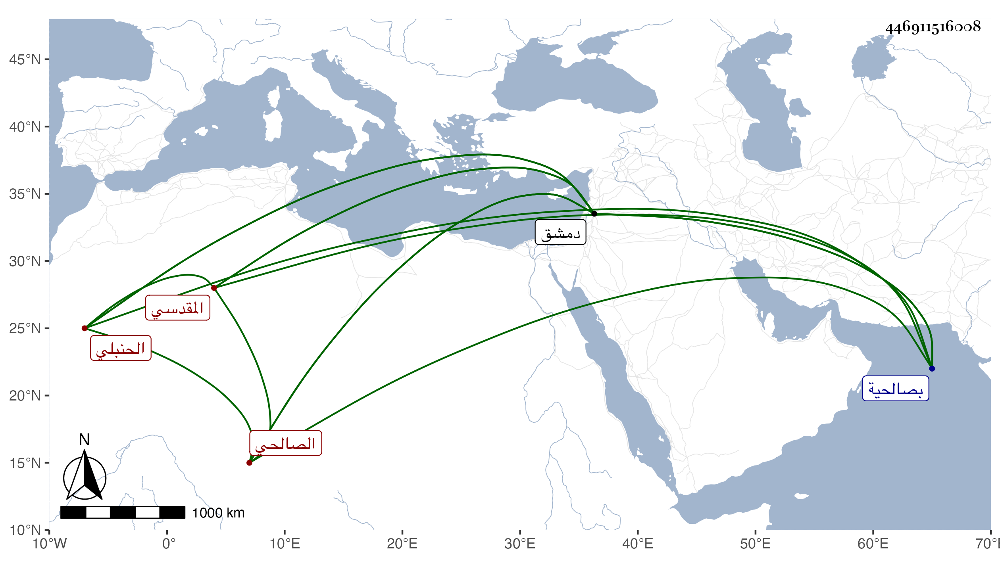

0902Sakhawi.DawLamic.ITO20230111-ara1.EIS1600.446911516008
Biography ID: 446911516008
54
عبد الله بن أبي بكر بن عبد الرحمن بن محمد بن أحمد بن القاضي التقى أبي الفضل سليمان بن حمزة بن أحمد بن عمر بن أبي عمر الجمال بن العماد المقدسي الصالحي الحنبلي أخو ناصر الدين محمد وست الفقهاء ويعرف كسلفه بابن زريق بتقديم الزاي مصغر . ولد في ذي القعدة سنة ثمان وثمانين وسبعمائة بصالحية دمشق واعتنى به عمه الحافظ ناصر الدين فأحضره على خليل بن إبراهيم الحافظي والعلاء علي بن عبد الرحمن بن محمد بن سليمان المقدسي وإبراهيم بن أبي بكر بن السلار والشمس محمد بن محمد بن عبد الله بن عوض وغيرهم وأسمعه على أحمد بن إبراهيم بن يونس العدوي وعبد الرحمن بن عمر بن مجلي وناصر الدين محمد بن محمد ابن داود بن حمزة ومحمد بن الرشيد عبد الرحمن المقدسيين ورسلان الذهبي والشهاب ابن العز وفرج الشرفي وأبي هريرة بن الذهبي وخلق وأجاز له جماعة وحدث سمع منه الفضلاء وناب في الحسبة بدمشق . مات في مستهل جمادى الآخرة سنة ثمان وأربعين رحمه الله وإيانا ، وفي الحلبيين الجمال عبد الله بن محمد بن زريق وسيأتي .
